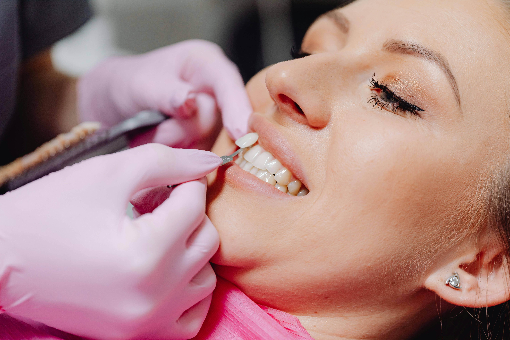
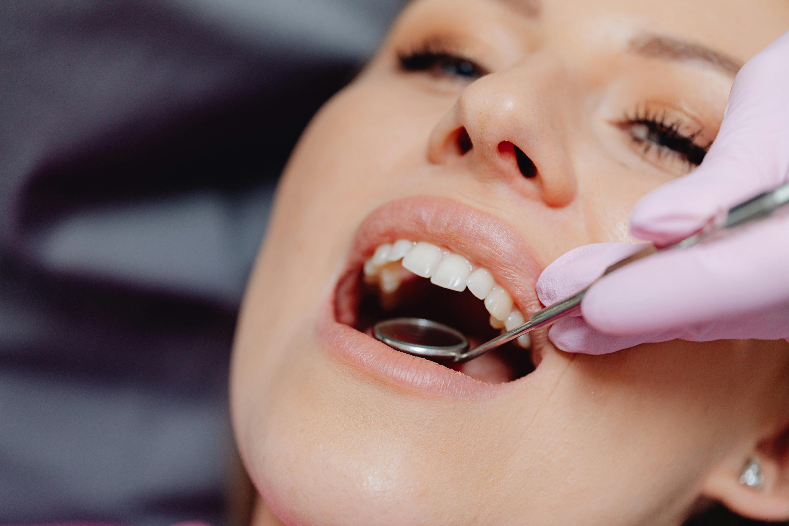

تواصل معنا
📍 الفروع
القاهرة - حلوان بجوار محطة المترو
عين شمس - شارع أحمد عصمت
مدينة نصر - شارع الطيران
📞 أرقام التواصل
0100 123 45547
0111 422 35463
خدماتنا
نقدم رعاية متكاملة في جميع تخصصات طب الأسنان باستخدام أحدث التقنيات العالمية
.jpg)
زراعة الأسنان
تعويض الأسنان المفقودة بجذور صناعية عالية الثبات والمظهر الطبيعي.

ابتسامة هوليوود
تصميم ابتسامة مثالية باستخدام عدسات تجميلية متطورة للحصول على مظهر جذاب.

تقويم الأسنان
تصحيح الإطباق واعوجاج الأسنان للحصول على ابتسامة متناسقة وصحية.

تبييض الأسنان
إزالة التصبغات واستعادة اللون الطبيعي بأسلوب آمن وفعال.

علاج الجذور
علاج دقيق للعصب مع الحفاظ على السن الطبيعي لأطول فترة ممكنة.
تجميل اللثة
تحسين شكل اللثة لتحقيق تناسق جمالي طبيعي للابتسامة.
الأسئلة الشائعة
قد تشعر بانزعاج بسيط خلال الأيام الأولى فقط ثم يختفي تدريجياً مع التأقلم.
نعم، يمكن إجراء التقويم للأطفال والبالغين بعد تقييم الحالة بواسطة الطبيب.
تعتبر من أكثر الإجراءات نجاحاً عند تنفيذها بواسطة طبيب مختص واتباع التعليمات الطبية.
تعتمد على العناية اليومية والعادات الغذائية وقد تستمر لفترات طويلة.
لا، بل يساعد على إزالة الجير والحفاظ على صحة الأسنان واللثة.
قد يكون نتيجة تراكم الجير أو التهاب اللثة ويحتاج إلى فحص طبي.
في أغلب الحالات يمكن علاج التسوس بالحشو إذا تم اكتشافه مبكراً.
يتم تحت التخدير الموضعي لذلك يكون الإجراء مريحاً في أغلب الحالات.
قد تكون بسبب مشاكل اللثة أو التسوس أو تراكم البكتيريا داخل الفم.
نعم، توجد عدة حلول مثل الحشوات التجميلية أو التركيبات حسب الحالة.
ليس دائماً، ويتم تحديد الحاجة للخلع بعد الفحص والأشعة.
الزراعة تعوض جذر السن المفقود بينما التركيبات تعتمد على الأسنان المجاورة.
نعم، يزيد من مشاكل اللثة ويؤثر على لون الأسنان ونسب نجاح بعض العلاجات.
نعم، يمكن علاجها بالتقويم أو الحشوات التجميلية أو القشور حسب الحالة.
نعم، ويتم تحديد العلاج المناسب بعد معرفة السبب الرئيسي للحساسية.
نعم، توجد خيارات مثل التقويم الشفاف في بعض الحالات المناسبة.
بسبب المشروبات الملونة والتدخين وبعض العوامل الطبيعية المرتبطة بالعمر.
نعم، قد يؤدي مع الوقت إلى تراجع كثافة العظام في المنطقة المفقودة.
نعم، في كثير من الحالات يمكن إعادة العلاج لتحسين النتيجة.
تنظيف الأسنان بانتظام واستخدام الخيط الطبي وإجراء الفحوصات الدورية.